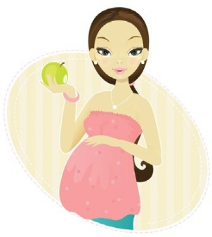
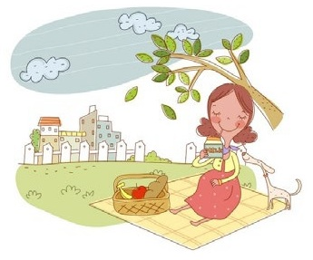

19 неделя беременности
Позу для сна выбрать всё сложнее. На животе уже спать категорически нельзя, да и неудобно это. На спине будущей маме спать тоже противопоказано: матка может пережимать полую вену, что небезопасно. Вот и остаётся только поза на боку со слегка подогнутой ногой. Под ноги, к слову, можно подкладывать подушку.
У ребенка в этот период подрастают руки и ноги, постепенно откладывается подкожный жир. Он защищает шею, хрящи грудины, а также бесперебойно работающие почки. Его сальные железы активно производят первородную смазку, защищающую нежную кожу от воздействия околоплодных вод. Эта смазка покрывает голову, лицо, уши, подмышки, паховые складки, а также места сгиба конечностей. Некоторые дети рождаются, покрытые ею; однако по мере приближения родов ее количество на теле малыша уменьшается. Малыш все более выглядит как младенец.
Активно растут и развиваются легкие.
Наблюдается рост головного мозга будущего младенца. Нервные клетки и нейроны заняли свои места, вследствие чего движения малыша стали более обусловленными.
Головка, как правило, держится прямо, может поворачиваться в стороны, а шея уже совершает развороты на все 180 градусов.
Пол малыша теперь можно определить с помощью УЗИ. В настоящее время малыш не спит только около 6 часов в сутки.
У плода начинает функционировать селезенка. Она участвует в кроветворении вместе с костным мозгом. В селезенке вырабатываются лимфоциты и моноциты, которые защищают организм от чужеродных веществ.

Внутриутробное развитие плода на 19 неделе беременности
ВАШ ОРГАНИЗМ
На этом этапе мамочке уже не терпится узнать, каков малыш на 19 неделе беременности. У нее продолжается относительно спокойный период беременности.
Женщине нужно наслаждаться жизнью: гулять, выполнять упражнения, встречаться с друзьями, родственниками.
На 19 неделе отступает вероятность возникновения смертельной опасности для малыша при необходимости принятия какого-либо медицинского препарата. Тем не менее, будущей маме надо относиться к этому с особой осторожностью и помнить, что все следует делать только под наблюдением врача или согласно его рекомендациям.
Частыми симптомами на этом этапе являются одышка, дискомфорт в пояснице, частое мочеиспускание.
К этой неделе дно матки уже должно подняться до уровня пупка, хотя у некоторых женщин это происходит позже – до 24й недели. Ваш пупок может даже вывернуться наизнанку, и темная линия – стать еще темнее.
Ваш вес продолжает увеличиваться, но следите за предписанной нормой, иначе избыточный вес может привести к многочисленным проблемам впоследствии, включая диабет, гипертонию, варикозное расширение вен и боли в спине и ногах. Избыточный набор веса также может стать причиной проблем со здоровьем у вашего малыша в его дальнейшей жизни, в т.ч. диабета, артрита и ожирения.
Это также повышает вероятность кесарева сечения, если вы носите крупного малыша.
Здоровый рацион питания и потребление большого количества жидкости является надежной гарантией набора вами оптимального веса во время беременности.
Сейчас началась активная подготовка к родам: бедренно-крестцовые суставы расслабляются, чтобы малышу было легче пробираться по родовым путям.
Малыш уже во всю бодрствует, о чем напоминают его шевеления.
Из сосков начинает выделяться молозиво (желтоватая, белая или полупрозрачная жидкость). При обильных выделениях грудь следует протирать влажными салфетками.
Может наблюдаться учащение пульса (около 80-90 ударов в минуту).
В связи с тем, что объем плазмы, содержащейся в крови беременной женщины, увеличился, в этот период может наблюдаться снижение уровня гемоглобина. Это естественный процесс, в большинстве случаев не представляющий опасности. Если это под контролем врача, то он обязательно назначит прием поливитаминов и железосодержащих препаратов.
Для повышения уровня гемоглобина рекомендуется употреблять в пищу следующие продукты: говяжья печень и почки, мясо кролика, яйца, гречневая и овсяная каши, пшено, фасоль и горох, чернику, инжир и томатный сок.
Появляется вероятность обнаружения растяжек в области живота, бедер или груди. Недавно появившиеся растяжки, как правило имеют красный оттенок, а старые – более светлый.
Могут появиться сильные боли в области спины и поясницы. Если не выполнять специальные гимнастические упражнения (вытягивание позвоночника: отведение плеч назад, наклон шеи вперед и т.д.), облегчающие такие боли, то возникает вероятность возникновения осложнений в дальнейшем.
Долго не сидите в одной позе, стулья со спинкой теперь ваши «друзья». Не сидите также нога за ногу и уж точно откажитесь от обуви на высоких каблуках.
Порой можно наблюдать усиление потоотделения и влагалищной секреции.
ЗДОРОВЫЕ СОВЕТЫ
Вас может мучить изжога. Избегайте жирной пищи и старайтесь не принимать горизонтального положения сразу после приема еды.
Очень полезны для беременных ходьба, плавание и йога, помогающие облегчить возникающие боли в спине и пояснице.
Сейчас в вашем меню не должно быть жареных и жирных блюд. Острая, копчёная пища, еда с ненатуральными добавками тоже должна быть сведена к минимуму. И под строгим контролем сейчас соленья и сладости.
А вот продукты с повышенным содержанием кальция и железа, наоборот, должны «прописаться» в вашем ежедневном рационе. А это значит, гречка, овсянка, курага, черника, томатный сок, говядина теперь в списке ваших гастрономических предпочтений.
Питайтесь дробно, часто, но на ночь не устраивайте никаких перекусов.
Рекомендуется хотя бы раз в неделю, приблизительно в одно и то же время, в одной и той же одежде взвешиваться и контролировать свою прибавку в весе.
Во 2-м триместре прибавка в весе за неделю в норме составляет 250-300 г.
С самого начала беременности предположительно вы должны набрать от 3,6 кг до 6,3 кг. Нормы по набору веса могут у каждого отличаться, все это индивидуально. Многое зависит от того, какой вес женщина имела до беременности, от ее возраста, комплекции и состояния здоровья. Большое влияние оказывает и то, как протекает беременность, а также иные факторы. Дать корректную оценку вашей прибавке в весе могут только ведущие вашу беременность гинекологи.
Основа меню – каши и говядина
На 19 неделе беременности полезно поинтересоваться курсами по подготовке к родам. Нужно обязательно использовать возможность их посещения, чтобы получить необходимую информацию о том, как побороть предродовой страх, как необходимо дышать при сватках, как правильно прикладывать ребенка к груди и прочее.
Подходит к концу пятый месяц вашей беременности. Напомним, что акушерский месяц составляет 4 недели, таким образом, 19 недель беременности – это конец пятого месяца (без одной недели). Возраст плода к этому сроку составляет 17 недель.
Еще немного – и половина вашей беременности останется позади.
18 неделя 20 неделя